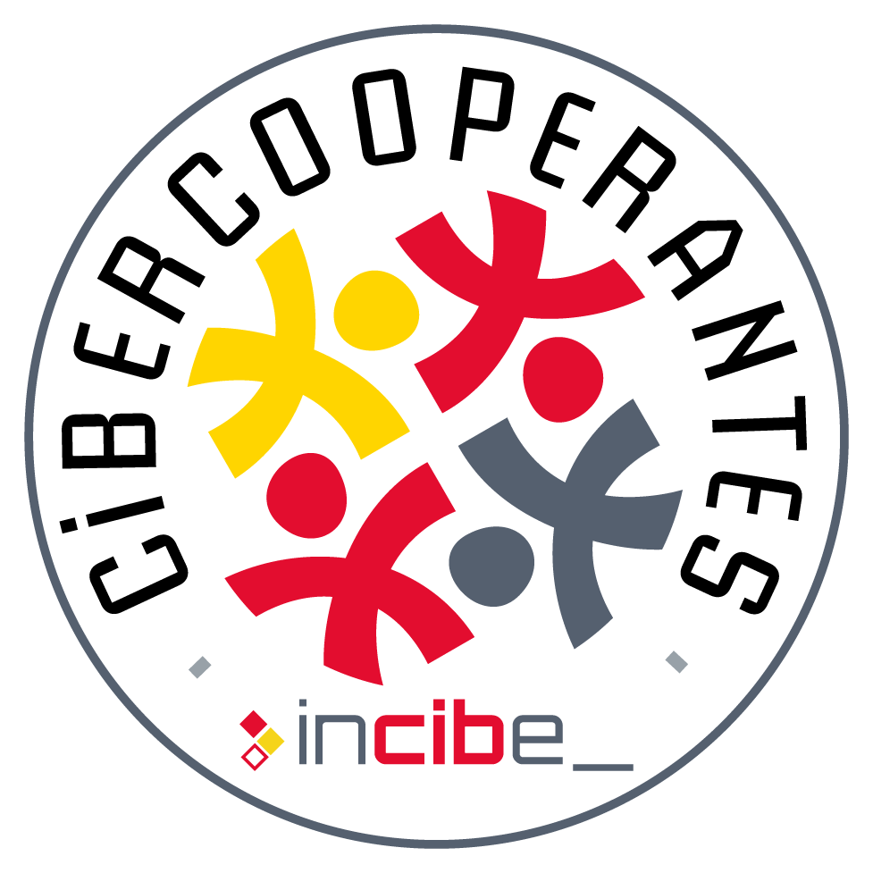
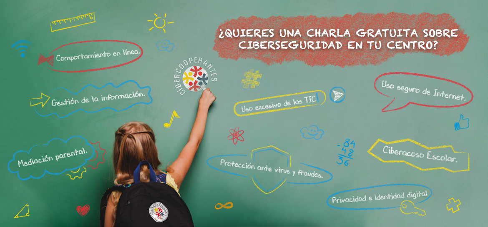

ASOCIACIÓN educatech

Educatech es una asociación sin ánimo de lucro cuyo objetivo fundamental es promover el desarollo de la electrónica, la programación, la robótica y la impresión 3D desde edades tempranas a través de talleres prácticos y mediante charlas informativas.
Programa Cibercooperantes
Por Miguel Fortes
Publicado el 11 Mayo de 2018 a las 6:00 PM

Programa Cibercooperantes, ¿Qué es?
El objetivo del programa Cibercooperantes de la Oficina de Seguridad del Internatuta (OSI), una sección del Instituto Nacional de Ciberseguridad (INCIBE), es difundir y concienciar a jóvenes, familiares y formadores sobre la importancia de la ciberseguridad.
El programa nace con el propósito de promover la colaboración de personas particulares interesadas en la divulgación de la ciberseguridad a través de charlas de sensibilización, con centros que requieren de este tipo de formación destinado a niños, jóvenes, padres, madres y educadores.
Quiero una charla en mi centro
Si estás interesado en organizar una charla en tu centro puedes consultar los requisitos en la web de Busco Cibercooperante. También puedes ponerte en contacto con nosotros mediante el correo educatechmalaga@gmail.com si su centro se encuentra en la Provincia de Málaga y nosotros gestionamos la charla..
SLas temáticas incluidas en el programa de cibercooperantes son las siguientes:
- Ciberacoso escolar
- Privacidad, identidad digital y reputación
- Netiqueta: comportamiento en línea
- Gestión de la información y acceso a contenidos inapropiados
- Protección ante virus y fraudes. Seguridad de los dispositivos
- Uso excesivo de las TIC
- Mediación parental y uso de herramientas de control parental.
- Uso seguro y responsable de las TIC. Enfoque generalista, contempla todas las temáticas antes expuestas pero de manera condensada
Así que desde este momento estamos a vuestra disposición. Para saber todo sobre el programa de CiberCooperantes no dudes en visitar su web.